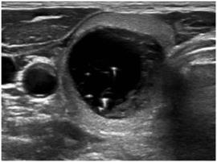
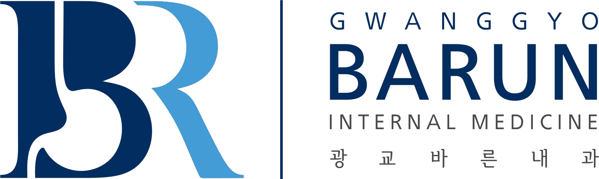
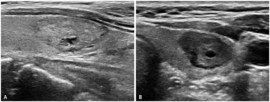
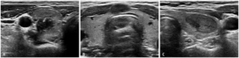
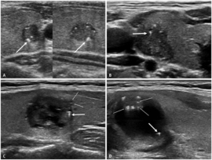

K-TIRADS 2양성
전형적 양성 모양해면모양, 순수 낭종, 낭성 부분 안 혜성꼬리 인공음영.
FNA: 일반적으로 안 함
초음파 모양(K-TIRADS)과 크기 기준으로 필요한 검사만 정확히 고릅니다.

대표 초음파 예시와 검사 기준을 함께 봅니다

전형적 양성 모양해면모양, 순수 낭종, 낭성 부분 안 혜성꼬리 인공음영.

작으면 추적 우선부분 낭성 또는 등/고에코 결절이며 3대 의심소견이 없음.

정밀 확인 후보의심소견 없는 저에코 고형결절, 의심소견 동반 등/고에코, 완전 석회화.

놓치면 안 되는 군저에코 고형결절에 점상 고에코, 세로로 긴 모양, 불규칙 경계 중 하나.
일상적 FNA 없음. 커져서 치료 계획이 필요하거나 절제술 전 확인이 필요하면 예외.
2 cm 초과부터 FNA 고려. 작고 안정적이면 추적 위주.
1-1.5 cm 초과. 위치, 초음파 소견, 임상 위험인자, 선호도에 따라 결정.
1 cm 초과부터 FNA. 림프절 전이, 명백한 외부 침범 등은 크기와 무관.
| Class | 결과 | 성인 암위험 | 이후 관리 흐름 |
|---|---|---|---|
| I | 비진단 | 약 13% | 초음파 유도 재검. 반복 비진단·성장·강한 의심이면 CNB 또는 진단적 수술 고려. |
| II | 양성 | 약 4% | 즉시 치료는 보통 불필요. K5 모양은 6-12개월, K3/4는 12-24개월 후 재평가. |
| III | AUS | 약 22% | 재FNA, CNB, 분자검사, 추적 또는 진단적 수술 중 선택. |
| IV | 여포종양 | 약 30% | 진단적 엽절제술을 주로 고려. 분자검사 결과에 따라 선택적 추적 가능. |
| V-VI | 악성 의심/악성 | 약 74-97% | 수술 평가가 기본. 성인 저위험 미세유두암은 조건이 맞으면 적극적 관찰도 논의. |